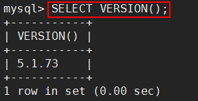
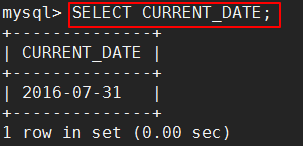
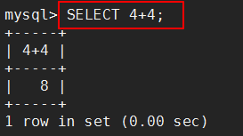
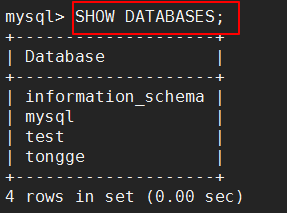
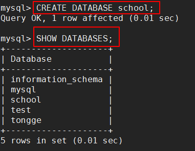
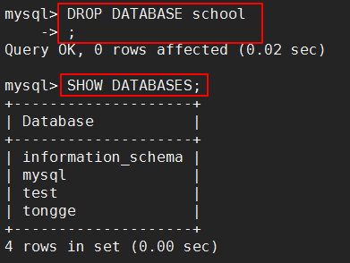
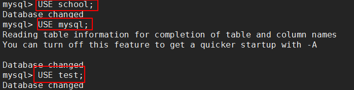

MySQL学习笔记02 By wang zhiqiang 2016-07-31 更新日期:2016-07-31 文章目录 1. 远程连接数据库2. SQL语句2.1. 格式：默认是大写，必须以分号结尾2.2. 显示数据库版本2.3. 显示现在日期2.4. 显示计算结果2.5. 显示所有数据库2.6. 创建一个数据库2.7. 删除一个数据库2.8. 切换当前操作的数据库2.9. 不能修改数据库的名字 远程连接数据库mysql -h xxx.xxx.xxx.xxx -u root -p SQL语句格式：默认是大写，必须以分号结尾显示数据库版本SELECT VERSION();  显示现在日期SELECT CURRENT_DATE;  显示计算结果SELECT 4+4;  显示所有数据库SHOW DATABASES;  创建一个数据库CREATE DATABASE school;  删除一个数据库DROP DATABASE school;  切换当前操作的数据库USE school;  不能修改数据库的名字